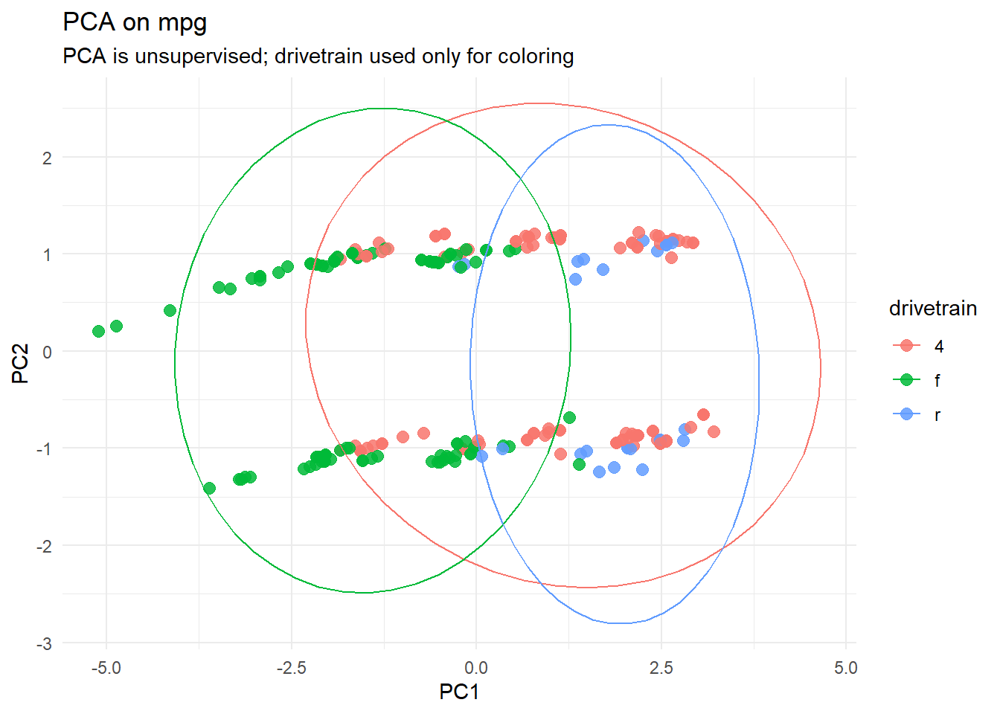

# Question 1 - PCA# I'm using the mpg dataset to see if you can determine the drivetrain of cars based on the numeric data in the datasetset.seed(1) # Setting seedlibrary(ggplot2)library(psych)
Warning: package 'psych' was built under R version 4.5.3
Attaching package: 'psych'
The following objects are masked from 'package:ggplot2':
%+%, alpha
library(randomForest)
Warning: package 'randomForest' was built under R version 4.5.3
randomForest 4.7-1.2
Type rfNews() to see new features/changes/bug fixes.
Attaching package: 'randomForest'
The following object is masked from 'package:psych':
outlier
The following object is masked from 'package:ggplot2':
margin
data <- mpgmpg_num <- data[,c(3:5, 8:9)]bart <-cortest.bartlett(cor(mpg_num), n =nrow(mpg_num)) # Running Bartlett'sbart # Very small p-value so worth pursuing
retain <-data.frame( # Checking where pve is larger than broken stick values to determine which pcs to usePC =paste0("PC", 1:length(pve)),ObservedPVE =round(pve, 3),BrokenStick =round(bs, 3),Keep = pve > bs)retain # Tells me to only use PC1, but going to use 2
drivetrain <- data$drvscores <-as.data.frame(pca$x)scores$drivetrain <- drivetrain # Adding in drivetrain to dataset to see if I can distinguish themplt <-ggplot(scores, aes(PC1, PC2, color = drivetrain)) +geom_point(size =2.6, alpha =0.85) +theme_minimal() +labs(title ="PCA on mpg", subtitle ="PCA is unsupervised; drivetrain used only for coloring")plt +stat_ellipse() # 95% CI

# You are not able to distinguish drivetrains from each other based on the numerical data
# Running significance testman <-manova(cbind(PC1, PC2) ~ drivetrain, data = scores)summary(man, test ="Pillai")
# Although it doesn't appear that way based on the graph, there is a large amount of significanceprint(pca$rotation) # Checking to see what variables contributed the most to PC1 and PC2. It looks like engine displacement and number of cylinders contributed the most
# Question 2 - Random Forestset.seed(42)id_train <-sample(seq_len(nrow(mpg)), size =0.7*nrow(mpg))train <- mpg[id_train, ] # Training dataset for training the modeltest <- mpg[-id_train, ] # Testing datasetprint(head(train))
# A tibble: 6 × 11
manufacturer model displ year cyl trans drv cty hwy fl class
<chr> <chr> <dbl> <int> <int> <chr> <chr> <int> <int> <chr> <chr>
1 dodge dakota pic… 3.7 2008 6 manu… 4 15 19 r pick…
2 volkswagen passat 1.8 1999 4 auto… f 18 29 p mids…
3 dodge ram 1500 p… 4.7 2008 8 manu… 4 12 16 r pick…
4 nissan pathfinder… 4 2008 6 auto… 4 14 20 p suv
5 dodge ram 1500 p… 5.9 1999 8 auto… 4 11 15 r pick…
6 volkswagen passat 1.8 1999 4 manu… f 21 29 p mids…
print(head(test))
# A tibble: 6 × 11
manufacturer model displ year cyl trans drv cty hwy fl class
<chr> <chr> <dbl> <int> <int> <chr> <chr> <int> <int> <chr> <chr>
1 audi a4 3.1 2008 6 auto… f 18 27 p comp…
2 audi a4 quattro 1.8 1999 4 manu… 4 18 26 p comp…
3 audi a4 quattro 2 2008 4 auto… 4 19 27 p comp…
4 audi a6 quattro 3.1 2008 6 auto… 4 17 25 p mids…
5 audi a6 quattro 4.2 2008 8 auto… 4 16 23 p mids…
6 chevrolet c1500 subu… 5.3 2008 8 auto… r 14 20 r suv
set.seed(123)rf <-randomForest(as.factor(drv)~ ., data = train, # Period means all other datantree =500, # Number of trees made based on hardnessmtry =2, # Number of features selected in our bootstrapping importance =TRUE)print(rf)
Call:
randomForest(formula = as.factor(drv) ~ ., data = train, ntree = 500, mtry = 2, importance = TRUE)
Type of random forest: classification
Number of trees: 500
No. of variables tried at each split: 2
OOB estimate of error rate: 7.36%
Confusion matrix:
4 f r class.error
4 70 4 0 0.05405405
f 0 73 0 0.00000000
r 6 2 8 0.50000000
# My OOB is 7.36%# My confusion matrix was pretty successful at classifying on training data
# Now putting new data into same modelpred <-predict(rf, newdata = test)conf <-table(Observed = test$drv, Predicted = pred)conf
Predicted
Observed 4 f r
4 21 7 1
f 3 29 1
r 7 0 2
# My model was relatively successful on new data# Checking accuracyacc <-mean(pred == test$drv)print(acc)
[1] 0.7323944
print(importance(rf))
4 f r MeanDecreaseAccuracy
manufacturer 15.4285226 11.8468942 10.5537581 19.0534339
model 14.5587543 9.8090564 9.8230406 16.1009771
displ 6.6202607 21.3568385 15.3259643 22.1856299
year -2.5585585 4.4283312 -4.3660327 -0.8151158
cyl 5.5931739 15.2280753 12.3570145 16.8721267
trans -0.1494245 -0.1491888 -3.9703029 -1.8540478
cty 14.3933976 22.7545982 0.4263608 24.7264703
hwy 25.9514676 23.9948751 -0.6337382 30.0278424
fl 4.2685322 3.1770004 4.4820305 6.6601528
class 12.7836374 24.4386894 10.0296868 22.2316159
MeanDecreaseGini
manufacturer 7.3638749
model 8.4659872
displ 14.0143052
year 0.9110391
cyl 6.3942722
trans 2.5718538
cty 16.9243451
hwy 21.2056520
fl 1.6264512
class 13.7434805
# Based on mean decrease accuracy the most important variables were hwy and cty# Based on GINI the most important variables were hwy and cty, as well# My data based on PCA and random forest didn't really agree with each other# I noticed differences in that PCA just takes all of the data you have while random forest takes some of the data you have and tries to use that to predict new data